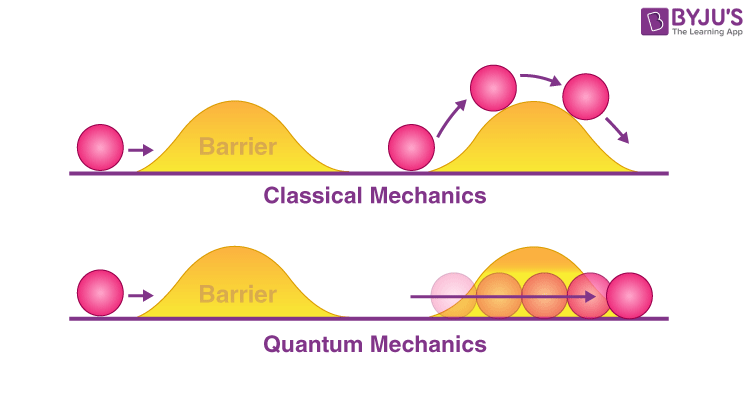

Table of Contents |
|---|
| Abstract |
| Introduction |
| Analysis and Discussion |
| References |
Abstract Paragraph HERE
Introduction
Quantum tunnelling is a critical concept in Quantum mechanics which demonstrates the limitations of concepts in classic mechanics on the quantum scale and further supports the importance
of understanding quantum mechanics to explain and better understand different phenomena happening around us. Over the recent years quantum mechanics has been becoming more and more researched
in order to understand quantum mechanical concepts and use these findings to improve on current technology such as quantum computers for a better quality of life. This article will discuss
what quantum tunnelling is, the history of quantum tunnelling, the importance of it in our lives and applications of quantum tunnelling in the real world.
Analysis and Discussion

Figure 1
What’s Quantum Tunnelling?
Quantum tunnelling is the process by which a particle, instead of being limited by having insufficient energy to overcome an energy barrier, penetrates through the energy barrier disappearing
from one side and reappearing on the other. As a particle passes through the energy barrier the wavefunction associated with the particle will exponentially decay. Figure 1 shows an analogy
of quantum tunnelling happening with a ball, in Newtonian physics the only way for the ball to overcome the energy barrier (the hill) is by having sufficient energy to roll over it however in
quantum physics the ball can pass through the energy barrier without meeting the energy requirements to overcome it. This works thanks to Heisenberg’s Uncertainty principle which states that
we can measure either the momentum or the position of a particle in a specific moment in time, we cannot know both simultaneously, because as we measure one, the uncertainty in the other becomes
infinitely large. The probability of a particle experiencing the effects of quantum tunnelling is dependent on the size and the mass of the energy barrier where larger and more massive energy barriers
would reduce the likelihood of quantum tunnelling occurring.
The History of Quantum Tunnelling
“Friedrich Hund made the first analysis of quantum tunnelling in 1927 as he solved the newly proposed Schrödinger’s equation.” Quantum tunnelling became a theoretical concept in 1928 when George
Gamow used this concept to explain alpha particles escaping from a barrier surrounding the nucleus. In 1932 George Uhlenbeck observed the first molecular tunnelling of hydrogen atoms in ammonia.
It was first observed in 1957 by Leo Esaki who showed that “electrons could tunnel through a thin insulating barrier in a semi-conductor” by performing the tunnel junction experiment. In 1962,
Ivar Giaever observed the first superconducting tunnelling by repeating an equivalent to Esaki’s experiment but replacing germanium and silicon with aluminium and lead and observed that the
magnitude of the tunnel current through the junction is related to the gap size between the aluminium and lead. In 1962 Brian Josephson decided to do the same experiment as Giaever but instead of
measuring ordinary tunnel currents where individual electrons travelled through the oxide he decided to measure the tunnel currents of the cooper pairs, where he discovered that at 0V there was a
supercurrent that travelled through the tunnel junction and when a voltage passed the supercurrent began to oscillate.
Importance of quantum tunnelling and real world applications
Quantum tunnelling may seem insignificant; however, it plays many vital roles around us one of which is nuclear fusion in stars which helps sustain life on Earth and Earth-like planets. When two light
nuclei fuse into a heavier one they must have sufficient energy to overcome the highly repulsive electrostatic force between the 2 (positively charged) nuclei. “The only energy available in a star to
potentially overcome the Coulomb barrier is the kinetic energy of the nuclei due to thermal motion.” The average kinetic energy of the nuclei is insufficient most of the time so in order to fuse, the
nuclei must experience the effects of quantum tunnelling to bypass the energy requirements needed to overcome the strong electrostatic forces. A better understanding of quantum tunnelling will lead us
a step closer to the commercial use of nuclear fusion as a source of energy which is clean and renewable. Quantum tunnelling occurs in small transistors which becomes mor problematic the smaller the
transistor is as smaller transistors become more inefficient the smaller they are due to more charge leaking out of the transistor via quantum tunnelling as a result of thinner layers of insulating
material which increases the probability of quantum tunnelling happening. Furthermore, quantum tunnelling plays an important role in transferring hydrogen as a proton between an acidic and a basic site
inside of enzymes during reactions where substrates require large amounts of energy to break bonds between atoms therefore requiring tunnelling in the system for high efficiency and playing a significant
role in enzyme catalysis.
This article looked at what quantum tunnelling is as well as the importance of it. Quantum tunnelling gallows a particle to ignore an energy barrier and pass straight through it without providing any
energy to overcome it. This is significant as many systems rely on it to function for example nuclear fusion in the sun, however quantum tunnelling can also be a downside to some systems such as transistors
which require more energy for their purpose due to the large energy leaks that happen through tunnelling. From this it is safe to assume that quantum tunnelling will be of great importance for future
technological advancements.
References
[1]
[2]
[3]Razavy, M. (2003) Quantum Theory of Tunneling. World Scientific Publishing Company
Loading last update time...